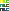
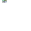
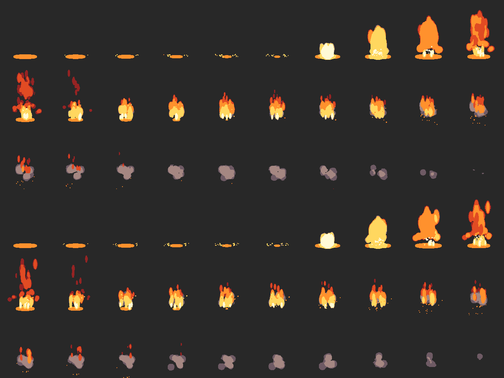
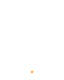

2026-11-02. 모든 이미지는 실제 Pixel Composer 1.22.0.5를 MCP로 구동해 만든 출력물(확대 표시, 픽셀 그대로).
1. 기능 시험 (스파이크)
✅ 리깅: 뼈대 → 포즈 키프레임 → 바인드

ASE 파일 노드로 읽은 Aseprite 파일(레이어 3개 합친 그림). add_node(..., file=)로 대화창 없이 생성.

JSON으로 만든 뼈(body→arm)에 위 그림을 붙이고, body 뼈 회전을 0°→45°→0° 키프레임. 그림이 뼈를 따라 움직임. 위치 맞추기는 아직 안 함(그래서 왼쪽 위 구석).
✅ MK Flame (완성형 생성기)
입력 몇 개만으로 애니메이션 생성. 흑백 출력이라 색은 Colorize로 따로 입혀야 함.
⛔ VFX 그룹(Node_VFX_Group_Inline): 만들기는 되지만 렌더 시 앱 에러(surface_wcache). 스프라이트를 연결해도 동일 → 스킬에 "쓰지 말 것"으로 표시.
✅ 아이콘 외곽선 / 이음매 없는 타일
도형(다이아몬드) → Outline(1px, 안티앨리어싱 끔). check_sheet: 2색, 하드 알파 통과.Perlin(Tile 켬) → Colorize → 팔레트 Posterize. 3색.같은 타일 3×3으로 깔기 — 이음매 없음.Offset(반 칸 밀기) 확인용 출력.
2. 빌드 모듈 패키지화 후 재빌드 (불 이펙트, 픽셀 시트)

위: 커밋된 기존 시트 / 아래: 패키지 모듈로 다시 빌드한 시트. 구조·타이밍 동일, 차이는 파티클 시드(고정 안 됨)에서 오는 무작위성. check_sheet 둘 다 통과(최고 높이 127px → 135px). 커밋된 결과물은 기존 것으로 유지.
참고: 커밋된 속성 이펙트 (픽셀 / 일러스트)

불 픽셀불 일러스트얼음 픽셀얼음 일러스트물 픽셀

물 일러스트
3. 스킬 테스트: 같은 요청, 스킬 없이 vs 있을 때
새 에이전트(Sonnet)에게 README만 준 경우와 스킬까지 준 경우, "첫 답장"과 작업 계획을 비교. 실제 툴 실행은 안 함.
요청
스킬 없이
스킬 있을 때
A. 불타는 검 아이콘 "오늘 안에 빨리"
질문 0개. 32×32·16색 등을 혼자 가정하고 바로 제작. Outline 노드 존재를 모름
질문 4개(크기·기존 세트·레퍼런스·정지/애니) 후 제작. 답 전에는 안 만듦. 확정 메모 → 시안마다 대조
B. 번개 스킬 이펙트 "메이플스토리 느낌"
"답 없으면 기본값으로 갑니다". 화면 번쩍임·지면 잔류 전기·남색 외곽선을 임의 추가. 히트 프레임·크기 기준 안 물음
레퍼런스·스타일·크기·발동 위치·타이밍(히트 프레임)·연출 느낌·팔레트·출력을 질문. 요청에 없는 효과는 제안만 질문 8개로 다소 많음
C. hero.aseprite 걷기 애니 "AI 그림 대충 줄인 것"
기본값 가정하고 진행. 뼈대(Armature) 노드를 몰라 부위마다 Transform 노드 계획
레이어 분리·크기·걷기 사양·팔레트·출력 질문. 보정 → Armature/Pose/Bind 계획. 미검증 부분은 미검증이라고 명시
A. 첫 답장 원문 비교
불타는 검 인벤토리 아이콘, 바로 작업합니다. 정해주신 게 없어서 아래 가정으로 진행할게요. 다르면 말씀해 주세요.
- 32x32 투명 배경 PNG 1장 (정지 이미지, 애니메이션 없음)
- 16색 이하 팔레트, 1px 어두운 외곽선, 안티앨리어싱 없음
- 대각선(우상향) 검, 칼날 위쪽에 불꽃 (주황, 노랑, 빨강)
첫 시안을 만들어서 결과 이미지와 함께 보여드릴게요.
급하신 건 알겠습니다. 틀린 가정으로 만들면 처음부터 다시 해야 해서, 시안 전에 꼭 필요한 것만 여쭙니다. 한두 줄이면 됩니다.
1. 크기와 칸: 아이콘은 몇 px(16/24/32/48)이고, 인벤토리 칸 배경색과 여백은 어떻게 되나요?
2. 기존 세트: 같은 세트의 아이콘이 있으면 한두 개 보내주세요. 팔레트, 외곽선 규칙, 빛 방향, 디테일 밀도를 맞추겠습니다.
3. 레퍼런스와 구도: 검 각도와 불꽃을 칼날 전체에 입힐지, 끝에만 둘지 알려주세요.
4. 정지 이미지냐 애니메이션이냐
답을 받으면 확정 사항을 5~10줄 메모로 정리해 보여드리고, 빠른 시안(실루엣 중심)부터 올리겠습니다.
B. 첫 답장 원문 비교
번개 스킬 이펙트 바로 시작합니다. 메이플스토리처럼 도트 느낌의 투명 배경 스프라이트 시트로 만드는 걸로 가정했습니다.
- 연출: 적 머리 위 하늘에서 번개가 내리꽂힙니다. 이어서 착탄 지점에 스파크 폭발과 잔류 전기가 나옵니다. 총 12~16프레임짜리 원샷.
- 색: 흰색 코어에 노랑과 하늘색 외곽, 외곽선은 짙은 남색 계열.
- 규격: 프레임 128x192, 하드 알파, 도트 격자 2배 확대.
확인 부탁드립니다. 답이 없으면 위 기본값으로 갑니다.
번개 이펙트 작업을 시작하기 전에 몇 가지만 확인하겠습니다. 틀린 가정으로 만들면 처음부터 다시 만들어야 해서, 꼭 필요한 것만 여쭙니다.
1. 레퍼런스: 메이플스토리 중 어떤 스킬을 떠올리시나요? 좋은 점과 피하고 싶은 점도.
2. 스타일: 픽셀 도트풍 / 일러스트풍 / 둘 다
3. 실제 크기: 프레임 크기와 캐릭터 키 대비 배율, 픽셀 퍼펙트 여부
4. 발동 위치와 대상: 한 명/여러 명, 시작 높이, 좌우 반전
5. 타이밍: 총 길이, fps, 히트 프레임
6. 연출 느낌: 전조, 섬광·정지 프레임, 사라지는 방식
7. 팔레트와 배경: 게임 팔레트, 블렌드 방식, 배경 스크린샷
8. 출력 규격
답을 받으면 확정 사항을 5~10줄 메모로 정리해 보여드리고, 그다음 거친 시안부터 만들겠습니다.
C. 첫 답장 원문 비교
hero.aseprite 확인하고 바로 작업할게요. 먼저 파일을 열어 캐릭터 상태를 확인하고, 지저분한 부분은 정리하겠습니다.
그림 한 장만으로는 진짜 걷기 동작이 안 나옵니다. 팔다리가 따로 움직이게 하려면 레이어가 분리되어 있거나, 제가 부위를 잘라 나눠야 합니다.
답을 주시면 반영하고, 없으면 괄호 안 기본값으로 진행합니다.
- 바라보는 방향 (파일에서 보이는 방향 그대로)
- 프레임 수 (6프레임 루프)
- 결과물 형식 (PNG 시트 + GIF)
걷기 애니메이션 만들기 전에 꼭 필요한 것만 여쭤볼게요.
1. 레이어 분리: 부위별(머리, 몸통, 팔 위·아래, 다리 위·아래)로 나뉘어 있나요? 안 나뉘어 있다면 Aseprite에서 나눠 주실 수 있을까요? 제가 마스크로 잘라내면 경계가 찢어지기 쉽습니다.
2. 크기와 방향
3. 걷기 사양: 프레임 수, fps, 루프, 제자리 걷기, 느낌, 참고 영상
4. 팔레트
5. 출력: 시트 배치, 프레임 크기, 발 기준 피벗
가능하면 게임 스크린샷이나 같은 세트의 기존 에셋도 하나 보내 주세요.
"대충 줄인 지저분한 그림"은 팔레트 고정, 알파 정리, 떨어진 픽셀 제거 순서로 먼저 보정한 뒤 리깅하겠습니다.